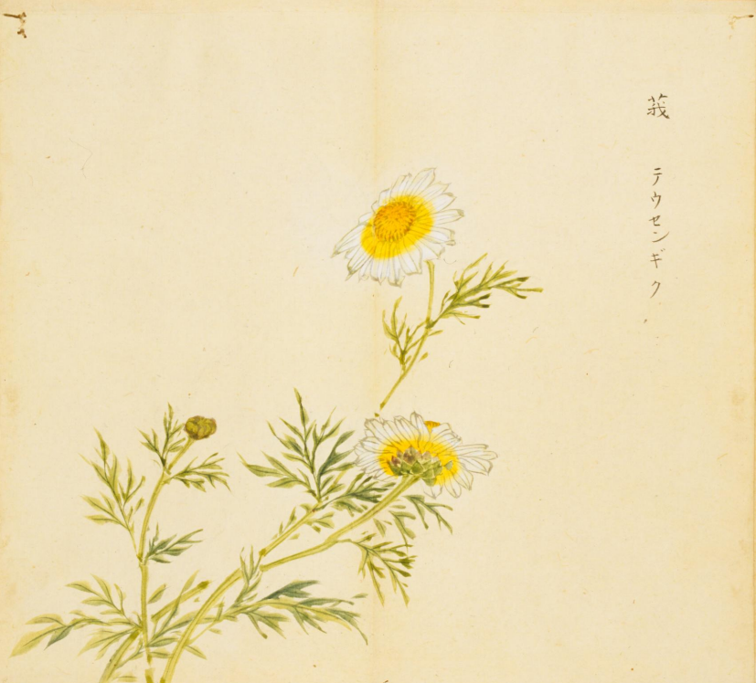
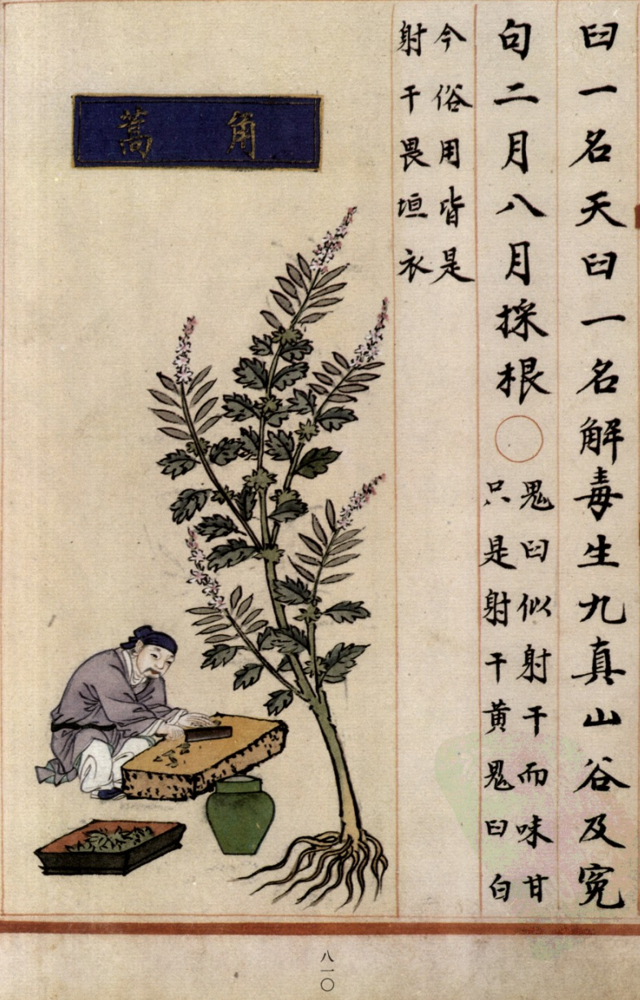
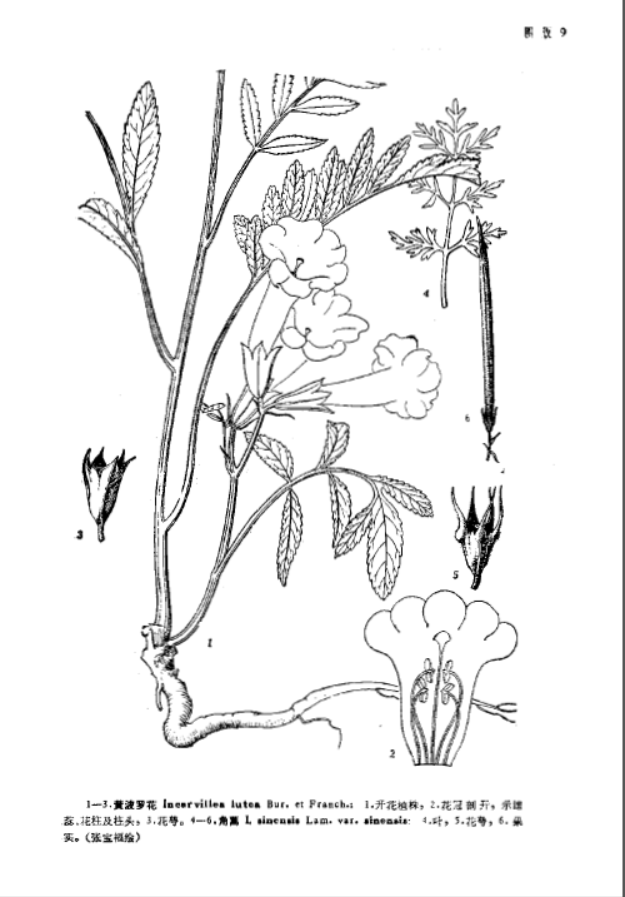

出现篇目
别名
莪蒿（《尔雅》）、萝蒿（同上）、抱娘蒿
古代记载
《毛诗草木鸟兽虫鱼疏》
莪，蒿也，一名萝蒿，生泽田渐洳之处，叶似邪蒿而细科，生三月中，茎可生食又可蒸食，香美，味颇似蒌蒿。
《毛诗正义》
正义曰：《释草》云：“莪，萝蒿也。”舍人曰：“莪，一名萝。”郭璞曰：“今莪蒿也。”陆机《疏》云：“莪，蒿也，一名萝蒿也。生泽田渐洳之处，叶似邪蒿而细，科生。三月中，茎可生食，又可蒸，香美，味颇似蒌蒿。”是也。 （《毛诗正义》疏《菁菁者莪》）
《诗集传》
莪、美菜也。（《诗集传》集注《蓼莪》）
《本草纲目》
"时珍曰∶廪蒿生高岗，似小蓟，宿根先于百草。《尔雅》云∶莪，萝是也。
《诗·小雅》云∶菁菁者，莪。陆玑注云∶即莪蒿也。生泽国渐洳处。叶似斜蒿而细科，三月生。茎、叶可生食，又可蒸食，香美颇似蒌蒿。但味带麻，不似蒌蒿甘香。"
当代记载 《中国植物志》
角蒿 （Incarvillea sinensis）， 紫葳科， 角蒿属植物。一年生至多年生草本，具分枝的茎，高达80厘米；根近木质而分枝。叶互生。顶生总状花序，疏散。种子扁圆形。花期5-9月，果期10-11月。产东北、河北、河南、山东、山西、陕西、宁夏、青海、内蒙古、甘肃西部、四川北部、云南西北部、西藏东南部。生于山坡、田野，海拔500-2500(-3850）米。

<细井徇>

<补遗雷公炮制便览>

<中国植物志>